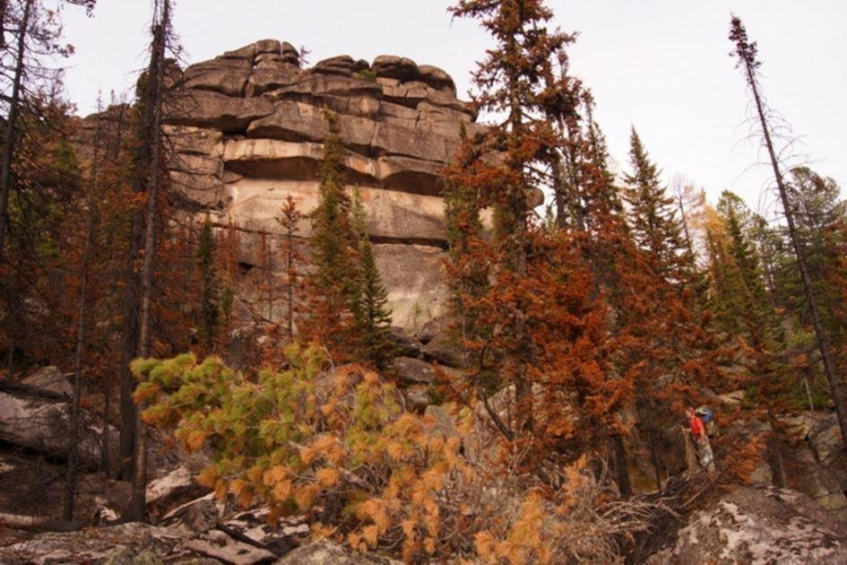
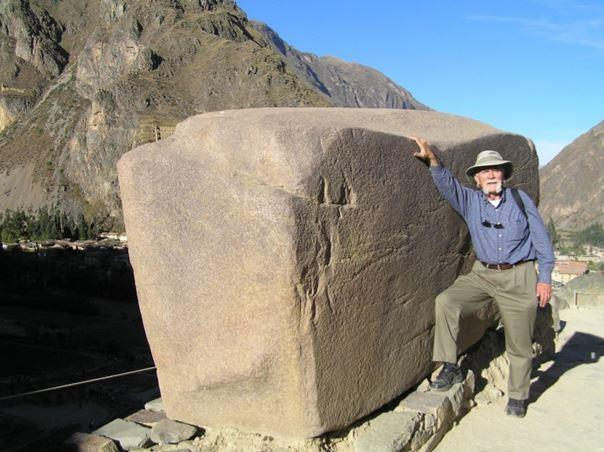
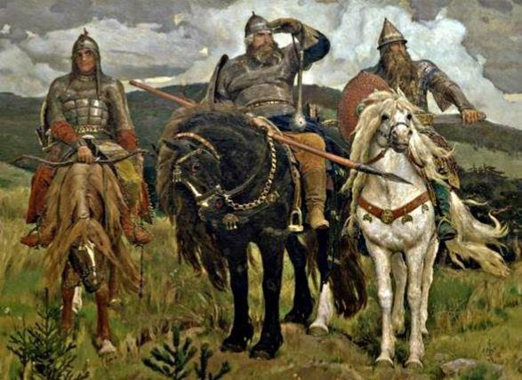
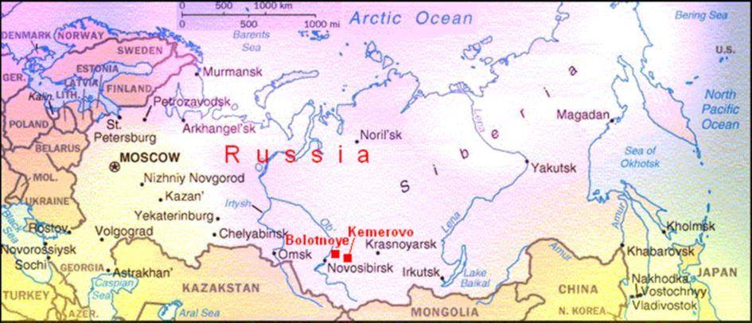
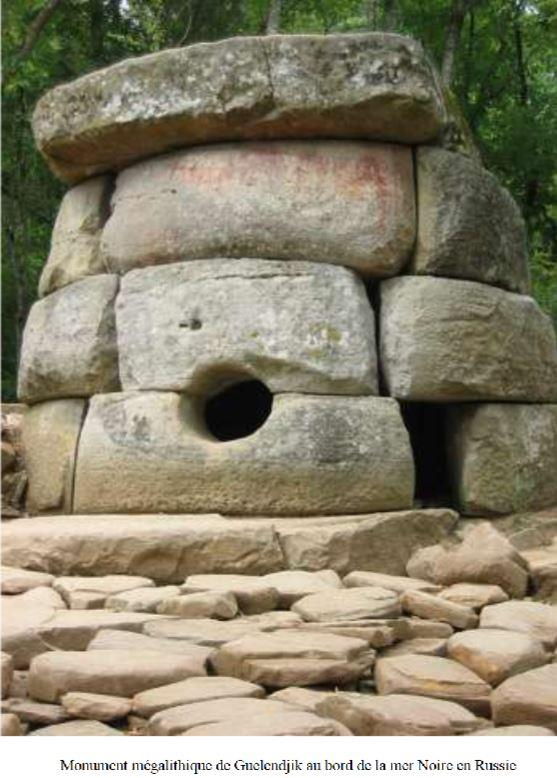
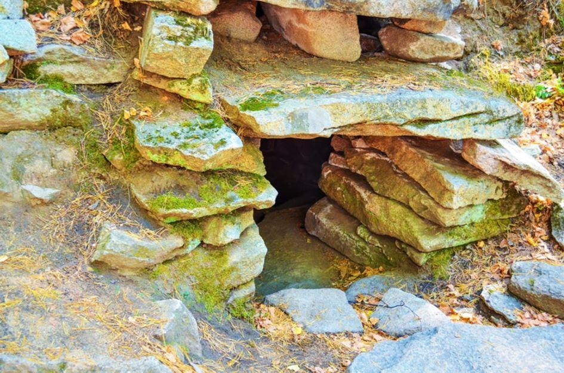
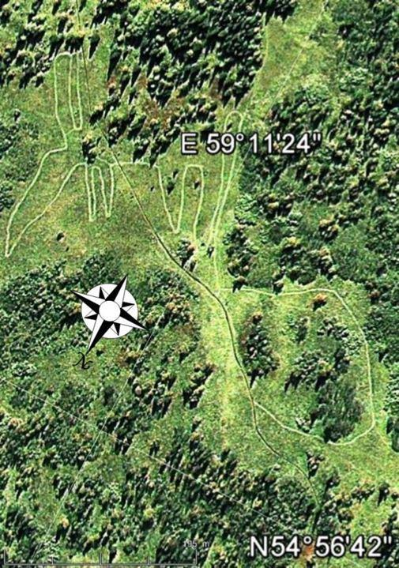

Longtemps de vastes territoires de la Russie sont restes ignorés ou secrets, souvent pour des raisons politiques ou simplement du fait de leur éloignement, de la difficulté d’accès ou du climat. C’est pour cela que les vestiges mégalithiques sont encore aujourd’hui régulièrement découverts. Toutes ces raisons ont aussi protégé ce passé de sa destruction ou de sa modification par les religions. Combien de sites mégalithiques en Europe, ou de par le monde sont souvent devenus des églises ou ont été rasés ?
La Russie de par sa taille est le pays le grand du monde et a été traversée par un grand nombre d’anciennes civilisations et de flux migratoires. Situé dans la région de Kemerovo à 1200 mètres au-dessus du niveau de la mer, et juché sur des montagnes, le site des montagnes Shoria a été découvert en 1991 par le géologue Pochetkin.
Des murs de pierres de granit empilées, sur un site d’environ 40 mètres de large, et d’une longueur de près de 200 mètres. Les blocs sont impressionnants dans leur dimension : la longueur de certaines pierres qui composent la construction est d'environ 20 mètres, et leur hauteur de 5 à 7 mètres.
Chaque bloc pèse plus de 1000 tonnes. Le géologue russe George Sidorov qui a étudié le site en écrit : « Ce que nous avons vu était choquant dans son champ d'application. Des blocs de granit énormes empilés dans un mur de maçonnerie polygonale, certaines de ces pierres de granit gigantesques sont estimés à peser plus de 3.000 tonnes, beaucoup d’entre elles ont été coupées avec des surfaces planes, des angles droits et des angles aigus ».
Certaines pierres ont aussi mis en panique les boussoles des chercheurs, les aiguilles s’écartant d’elles. Le plus étonnant est qu’ils ont aussi découvert dans le paysage des formes ressemblant à des pyramides. La technique de construction de maçonnerie polygonale est semblable aux célèbres structures mégalithiques de civilisations inconnues - au Mexique, au Pérou, au Liban et en Égypte.
La plus grande pierre mégalithique retrouvée dans le monde, a été celle de Baalbek au Liban et son poids est inférieur à 1.500 tonnes. Des vestiges de carrières proches ont aussi été découverts avec des pierres ou des formes taillées à même la roche déroutant les versions de formations terrestres naturelles. Sur les bords de la mer Noire, tout le long du Caucase occidental sur les deux côtés de la crête de la montagne centrale, dans une zone d’environ 12,000 kilomètres carrés de la Russie jusqu’à l’Abkhazie, se trouvent des centaines de monuments mégalithiques que les Russes appellent « les dolmens ».
La plupart d’entre eux sont représentés par des structures rectangulaires avec des angles droits parfaits, ou coupés dans des roches avec des trous dans leur façade, d’autres ont été courbées pour former un cercle parfait.
Certains sont recouvert de motifs, d’autres sont décorés de formes évoquant l’homme. Certains mégalithes ont des noms, souvent des bogatyrs. Les bogatyrs sont des héros fabuleux célébrés dans les anciens chants et dans les légendes de la Russie et de la Petite Russie.
En fait, ils sont un conglomérat de différentes entités, ayant reçu les traits de caractère de personnages illustres réels, aussi bien que de personnages de légende et de symboles mythiques issus de mythes pré-chrétiens. Les gens du pays disent que ces monuments sont des maisons construites jadis par des géants pour des nains. Beaucoup des dolmens du Caucase ont été détruits pour être utilisés pour la construction locale. En France, en Portugal, en Syrie, aux Indes, et sur la côte méridionale de la Crimée, il existe des dolmens avec une dalle percée d'une ouverture ronde. Depuis deux siècles, les chercheurs russes les ont souvent visités et ont retrouvés des outils du néolithiques semblables à ceux retrouvés en France datant de la même période. Souvent les dolmens étaient recouverts d’un tumulus ou abritaient des tombes. Certains contenus sont visibles au musée Guimet à Paris. Les dolmens du Caucase sont âgés de 6 à 25.000 ans. Les monts Oural, les plus anciens au monde, dissimulent de nombreux secrets et des traces d’anciennes civilisations. L'Oural est l'une des régions les plus mystérieuses de la Russie. Dans ces lieux, nombres de traditions et de contes mystérieux ont été préservés, comme s’ils n’étaient pas tombés dans les tumultes de la christianisation, ce qui a sauvé le folklore païen archaïque jusqu’à la fin du XIXe siècle.
Les structures mégalithiques les plus courantes de la zone de steppe de l'Oural sont les menhirs. Ce sont des pierres brutes ou grossièrement finies qui se tiennent au sol. Ce type d’objet est également présent dans les zones forestières, mais très rarement et généralement associé à des dolmens. Il existe plusieurs types de menhirs dans le sud de l'Oural : simples, rangées de pierres, complexes de menhirs et structures circulaires de menhirs. Tous les menhirs célibataires découverts sont généralement situés à proximité des colonies ou des cimetières de l'âge du bronze.
Pour cette raison, les archéologues pensent qu'ils datent de cette période et les preuves de fouilles limitées ne contredisent pas cette conclusion. Les rangées de pierres sont pour la plupart orientées dans une direction est-ouest. La longueur de certains rangs connus est de 13 à 18 m. Les pierres les plus massives sont situées au centre, formant le noyau de la composition. La topographie des rangées de pierres (leur emplacement dans le paysage) est très variable et ne présente pas de motif particulier. Une découverte récente a été une structure circulaire de menhirs dans le village d’Akhunovo, en Bachkirie. D’un diamètre d’environ 25 m, composée de huit menhirs. Les deux plus grandes pierres sont alignées dans la direction nord-sud à l'intérieur de l'anneau. L'une de ces pierres centrales est entourée d'un anneau (diamètre de 3,5 m) et de trous de poteaux. La position de ces trous répète avec précision la structure de l’anneau de pierre entier, chaque trou correspond à un menhir de l’anneau. Le plus grand complexe mégalithique des montagnes de l'Oural est situé sur l'île de Vera, sur le lac Turgoyak. Il appartient à l’'Âge du cuivre. La plus grande structure de l'île est le mégalithe numéroté 1.
Une construction en gypse de 19 × 6 m, taillée dans le substrat rocheux et recouverte de pierres de taille mégalithiques. Le mégalithe est orienté ouest-est. La présence de fenêtres et de sculptures en pierre représentant des têtes d'animaux (taureau et loup), ainsi que la taille impressionnante du mégalithe, le distinguent des autres bâtiments mégalithiques de l'île. Il semble que ce mégalithe soit un temple construit pour des rituels liés à toute transition d'une condition à une autre. Quatre autres structures existent sur l’ile. Il y a un plus grand menhir dans le sud-est. Ce menhir avait été érigé pour marquer une direction au coucher du soleil en plein hiver. La destination de ce sanctuaire en plein air était des rituels liés aux cercles saisonniers et des solstices. Une carrière existe : Les pierres de la carrière portent des traces évidentes d’outils en cuivre ainsi que de cales en bois. Au moyen de ces cales et de cette eau, d’anciens bâtisseurs mégalithiques ont pu tailler du granit et extraire les blocs de pierre nécessaires. Il existe également des traces d'extractions de grandes plaques de pierre utilisées comme pierres angulaires.
En 2011, la découverte d'un géoglyphe représentant un élan ou un cerf a été réalisée à l'aide d'images satellite. Il est situé sur les pentes des montagnes du Parc national de Zyuratkul. La taille du dessin est énorme. Sa largeur est de 195 mètres, sa longueur de 218 mètres et sa diagonale de 275 mètres). En 2012, l'Institut d'histoire et d'archéologie de l'Académie des sciences de Russie a suggéré que les outils en pierre découverts lors de fouilles récentes témoignent d'un style de réduction lithique datant des périodes néolithique ou énéolithique, entre 4000 et 2000 av. Cette datation suggérée placerait la construction du géoglyphe russe, plusieurs siècles avant ceux de Nazca au Pérou, construits vers 500 de notre ère.
Pour terminer, les fameux Kigilyakh qui signifie « personne en pierre » sont des formations rocheuses naturelles et ne sont pas des mégalithes. Elles sont généralement composées de granit ou de grès façonnés à la suite d'un vieillissement cryogénique. Ils sont une caractéristique importante de la culture yakoute. Selon les légendes yakoutes, ces grands monolithes ont pour origine des personnes réelles.
Partager cette page